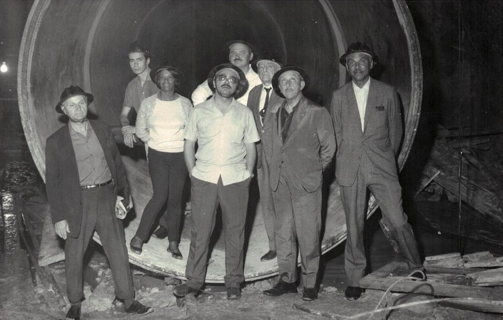

Conheça a história de Enedina Marques, a primeira engenheira negra do Brasil!
Enedina Alves Marques nasceu em Curitiba-PR, em 13 de janeiro de 1913, filha de Paulo Marques e Virgília Alves Marques. Formou-se em Engenharia Civil em 1945 pela Universidade Federal do Paraná (UFPR), entrando para a história como a primeira mulher a se formar em engenharia no Paraná e a primeira engenheira negra do Brasil.
Enedina desafiou padrões sociais e acadêmicos no Paraná.
Sua História
De origem pobre, com mais cinco irmãos, Enedina cresceu na casa do major Domingos Nascimento Sobrinho, onde sua mãe trabalhava. Foi o major quem pagou seus estudos em um colégio particular, a fim de que a jovem fizesse companhia à sua filha.
Ao concluir os estudos em 1931, Enedina passou a dar aulas, e a sonhar com a universidade de engenharia. Para ingressar em 1940 numa turma formada somente por homens brancos, Enedina precisou enfrentar todo tipo de perseguição e preconceito – mas rapidamente sua determinação e sua inteligência a destacaram, até que em 1945 ela finalmente se formou em Engenharia Civil pela Universidade do Paraná.

Depois de uma carreira sólida, viajou pelo mundo para conhecer culturas, e se aposentou em 1962 reconhecida como uma grande engenheira. Enedina Alves Marques faleceu em 1981, aos 68 anos, deixando não somente um importante legado para a engenharia brasileira, como para a cultura negra e a luta por um país mais justo, igualitário e menos racista.